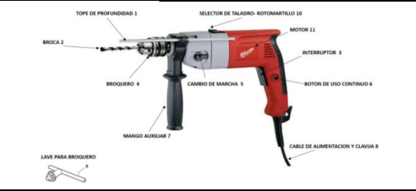

Documento 02040p54 · Revisión 03 · 13.10.2025
Registra la inspección de un taladro eléctrico específico, realizada en este momento antes de su utilización.
Responde cada criterio, adjunta evidencia cuando marques No cumple y revisa el resumen antes de enviar.
El registro se envió con el siguiente identificador:
Identificador de inspección:
Activa JavaScript y vuelve al catálogo para iniciar sesión.
Indica el proyecto y la ubicación de la inspección.
Captura el modelo del equipo inspeccionado. La fecha y hora se registran automáticamente.
Fecha y hora de la inspección: se registrará al enviar
Usa esta imagen como apoyo para identificar los componentes relacionados con los criterios. No sustituye la revisión del equipo real.

Responde los diez criterios. Si marcas No cumple, deberás adjuntar evidencia de ese criterio.
Revisa estos datos antes de registrar la inspección.
No hay no conformidades registradas.
El formulario no se enviará si falta un dato obligatorio o si alguna no conformidad no tiene evidencia.